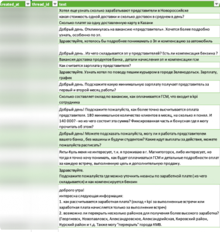
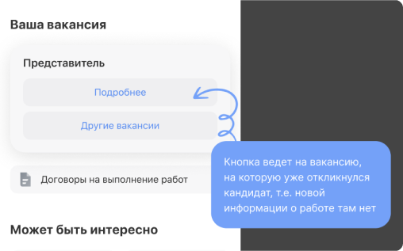
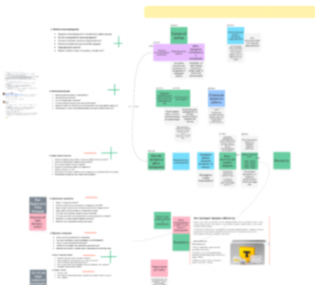
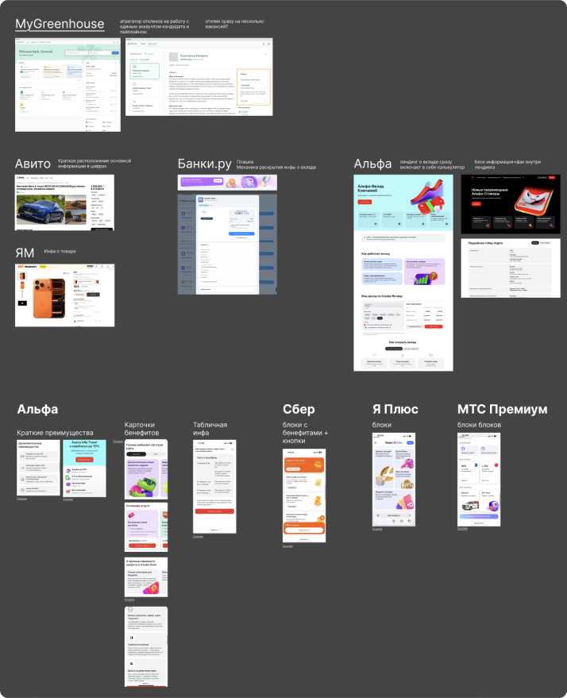
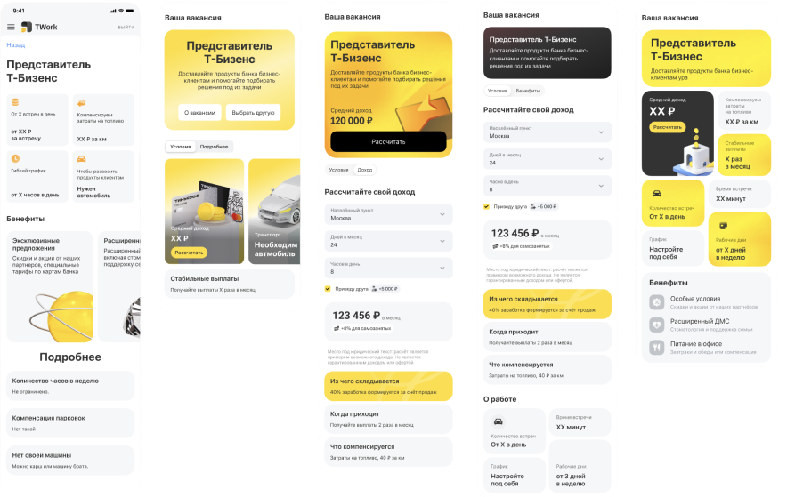
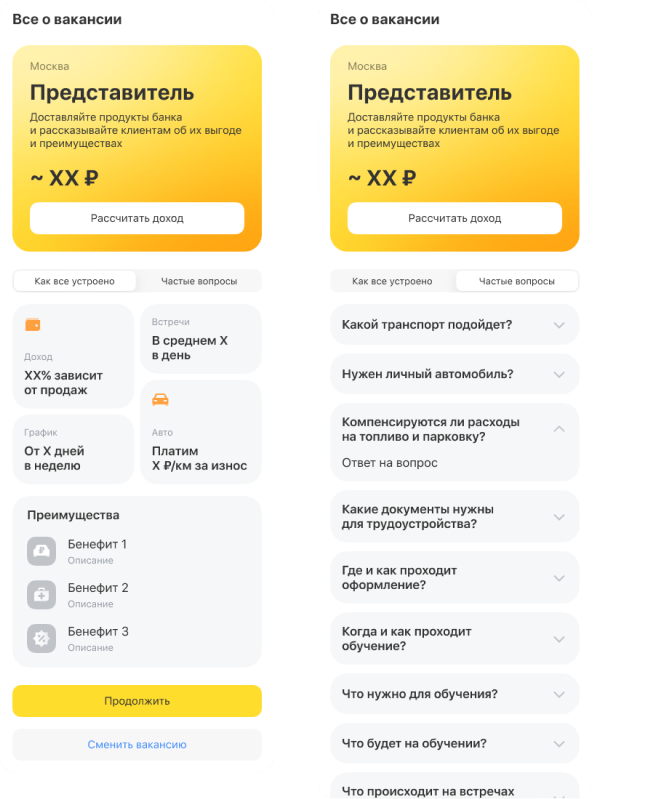
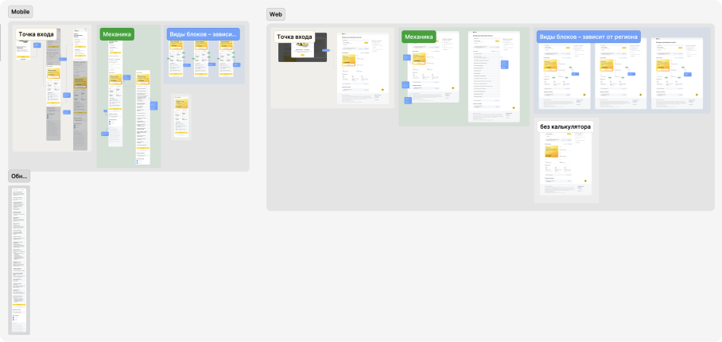

Раздел «Вакансия» в Личном кабинете кандидата
О продукте
Личный кабинет кандидата – пространство, где соискатель проходит все этапы найма после отклика на вакансию.
Представитель — сотрудник банка, который встречается с клиентами лично: доставляет банковские продукты, знакомит с ними и помогает подобрать подходящее предложение.
ЦА
Кандидаты на роль Представителя банка,
Роль и команда
Я участвовала на всех этапах разработки как продуктовый дизайнер.
Контекст задачи
Проблема
На входе у команды было масштабное исследование пользовательского опыта представителей в личном кабинете кандидата. Исследование показало:
Кандидатам не хватает прозрачности в ключевых условиях работы.
Это создавало дополнительную нагрузку на поддержку и неопределённость на пути кандидата. Часть пользователей разочаровывалась в процессе ещё до выхода на работу, что приводило к оттоку кандидатов и негативно влияло на восприятие бренда работодателя.
Примеры частотных вопросов в поддержку

As is

Это весь блок о вакансии, который есть сейчас
Гипотеза
Если показать кандидатам в ЛКК детали о доходе и графике по вакансии представителя, то за счет большей прозрачности условий процесс будут продолжать кандидаты, готовые на эти условия, что будет приводить к целевому трафику на трудоустройстве и снизится доля обращений в поддержку
Как проверить успешность решения?
После обсуждения мы с командой решили провести A/B тест
1. Контрольная группа (50%) - текущая реализация без изменений
2. Тестовая группа (50%) - новый блок «Ваша вакансия» в ЛКК
Метрики:
• 📈 Конверсия из трудоустройства в закрепляемость 2 недели — ожидается рост
• 📉 CR в следующий шаг — ожидается снижение
• 📈 CR в трудоустройство — без изменений
• 📉 Обращения в поддержку по вопросам дохода и графика — ожидается снижение
Решение
Наполнение блока
Аналитики собрали частые вопросы кандидатов к поддержке и кураторам, сгруппировали их по темам и расставили по частоте. Затем внутри каждой темы мы выделили ключевую информацию, которую чаще всего запрашивали, и приоритезировали её.
3 уровня информации:
1. Самая необходимая (график и оплата)
2. Приоритетная (компенсации и преимущества)
3. Желательная (то, что спрашивают регулярно, но не часто) – пойдет в FAQ

Данные под NDA
Бенчмарки
Информации получилось довольно много, мне нужно было компактно ее упаковать. Для поиска интерфейсных решений и общих паттернов я провела бенчмаркинг, оценивая не только сервисы найма, но и другие лайфстайл приложения.

Первые варианты
Прорабатывала варианты композиции и оформления блока, чтобы важная информация сразу считывалась пользователем. Стремилась сохранить простую и лаконичную структуру, не перегружая интерфейс, но при этом выделяя ключевые данные.

Финальный дизайн
После множества итераций и обсуждений с командой, я пришла к следующему формату

Всю основную информацию вынесли в блок, желательную положили в FAQ в табе
Передача в разработку
После утверждения дизайна отрисовала адаптив, прописала флоу механику, добавила корнеры, прописала с редактором тексты в интерфейсе и FAQ.
Переданные макеты

Геймификация
Бонусом добавили блоку интерактивности. Так как информации много, нужно было добавить пользователю стимул ознакомиться с ней и не оставить блок без внимания.
Решила применить механику поиска сокровищ, где вознаграждением будут реальные истории Представителей. Алмазы переиспользованы из уже существующей системы обучения представителей.
Результаты
A/B-тест показал положительную динамику по основным метрикам. Точные значения не раскрываю из-за NDA.
📈 Закрепляемость через 2 недели:+8%
📉 CR в следующий шаг:−6%
→ CR в трудоустройство:без значимых изменений
📉 Обращения в поддержку по вопросам дохода и графика:−17%
Дополнительно
• 👥 70% кандидатов заходят с мобильных устройств
• 20% открыли и проскролили FAQ (измеряли глубину)
• 20% собрали все 3 алмаза
• Самый популярный алмаз для сбора – из FAQ
Высокая доля мобильных пользователей подтверждает, что над ЛКК нужно продолжать работать с mobile-first подходом.
FAQ действительно пользуется спросом, его можно дополнять релевантными вопросами.
Алмаз собирают из FAQ скорее всего, потому что он очевидно выделяется в интерфейсе. Возможно стоит подумать над тем, как выделить алмазы на основной странице.
*данные в двух кейсах одинаковые, тк у этих задач общий эпик